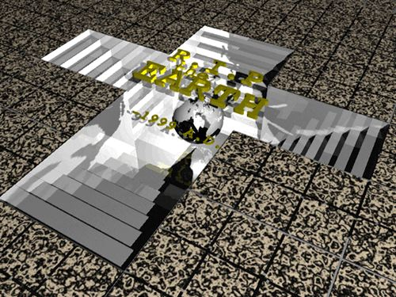
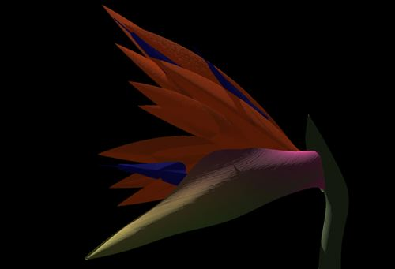
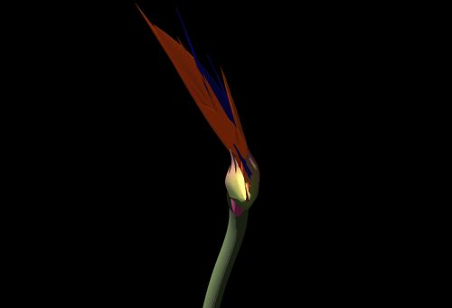
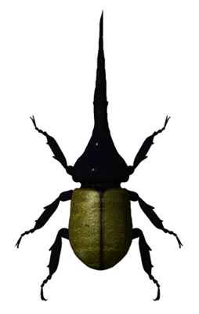
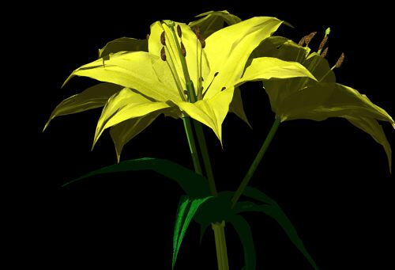

This image was created on Specular Infini-D 1.0. This is a product of when the 3-D software did not do anything useful. I have used Mac II to render this particular image. It took full 3 days!! Some of reason is its physical RAM. It had only 8MB. I don’t recall how much space system was taking. Anyway, 030 chip and this amount of memory do not really do anything, I guess…
This is very simple combination of bunch of same objects. Now days, any beginner can make this image. In that sense, it does not have any value as part of my portfolio, but I still like this very much. This is pretty much my first 3-D work. Has a lot of feeling in it, I guess...
-1991

Oh, this one... Puh! It tooook looong time to render on MacII. 3 full days... At the time, memory was still veeery expensive. Machines with more than 16meg was pretty rare. Just like the above one, it is done with Specular Infini-D 1.0.
It was supposed to describe the scene of the year 1999. Unfortunately, this tomb says- " R.I.P- the EARTH -1999 ." Because of this image, a lot of my friends think I have twisted pair cables in my brain. I do not know why. Someone, please tell me.
-1991

At the end 1995, I started to make a lot of nature objects on Strata Studio Pro(v1.5). This software was much better than Infini-D at the time. At least, I was allowed to edit each object in detail.
One function that made me happy was that I was able to convert each object to polygon based objects. This flower is called "Birds in Paradise". I had never seen this flower before I came to Texas. This particular image was rendered on PowerMac 8500 with fairly good amount of RAM, around 65MB.

Of course, this one was very pain on neck since this flower has too many petals in very crowded place. Basically, you never use straight output from 3-D program. Here you always have to make some modification on 2-D program since my 3-D program does not have collision detection. You have to render groups of few petals separately, and compose them together with air blush tool on 2-D program. This way, you have very good control of where you want which parts of flower to be.
-1995

I think this beetle is called "Hercules beetle." This is a very good example of how mathematics actually describes nature forms. Every shape you see here was created out of sphere. It was then pinched in and out. Since pinching occurs on math described curves, here is result. Pay attention to legs. Each spikes and so on is just pulled out points. Mathematics just impresses me so often. I just wish I am good at maht!! <laugh>.
This is also good example of "Don't make what they do not see" strategy. Kind of "If not broken, don't fix it." Do you think I would make the other side of this beetle? Nop.
BTW, the gold shell texture is made out of noise. I normally make all texture out of different noises.

This one is again on Strata Studio Pro. I think this image was actually on one of Strata's past brochuer. I sent out this image along some of my stuff at Houseworks Software to Strata. They had some kind of special issue that shows how multimedia or game companies are using Strata products. I had fairly fun making this. Rendering time got a lot better compare to years ago. I could render these images in waitable time. Petals were actually rendered twice as 2 sets of interval petals. I had to do this since this 3-D package did not have any physics. I had to model this without collision detection. Since most petals are not on axis itself, it never gave me correct reading or coordinate. What I decided to do it to let them collide, but redefine dimension by redifining coordinate. In English, overlay 2nd rendered image on 1st one and correct image by using mask.

spaceholder spaceholder spaceholder spaceholder spaceholder spaceholder spaceholder spaceholder spaceholder spaceholder spaceholder spaceholder spaceholder spaceholder spaceholder spaceholder spaceholder spaceholder spaceholder spaceholder spaceholder spaceholder spaceholder spaceholder spaceholder spaceholder spaceholder spaceholder spaceholder spaceholder
-1995
spaceholder spaceholder spaceholder spaceholder spaceholder spaceholder spaceholder spaceholder spaceholder spaceholder spaceholder spaceholder spaceholder spaceholder spaceholder spaceholder spaceholder spaceholder spaceholder spaceholder spaceholder spaceholder spaceholder spaceholder spaceholder spaceholder
-1995
 spaceholder spaceholder spaceholder spaceholder spaceholder spaceholder spaceholder spaceholder spaceholder spaceholder spaceholder spaceholder spaceholder spaceholder spaceholder spaceholder spaceholder spaceholder spaceholder spaceholder spaceholder spaceholder spaceholder spaceholder spaceholder spaceholder spaceholder spaceholder spaceholder spaceholder spaceholder spaceholder spaceholder spaceholder spaceholder spaceholder
spaceholder spaceholder spaceholder spaceholder spaceholder spaceholder spaceholder spaceholder spaceholder spaceholder spaceholder spaceholder spaceholder spaceholder spaceholder spaceholder spaceholder spaceholder spaceholder spaceholder spaceholder spaceholder spaceholder spaceholder spaceholder spaceholder spaceholder spaceholder spaceholder spaceholder spaceholder spaceholder spaceholder spaceholder spaceholder spaceholder
-1995